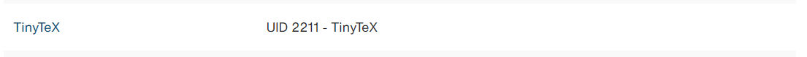
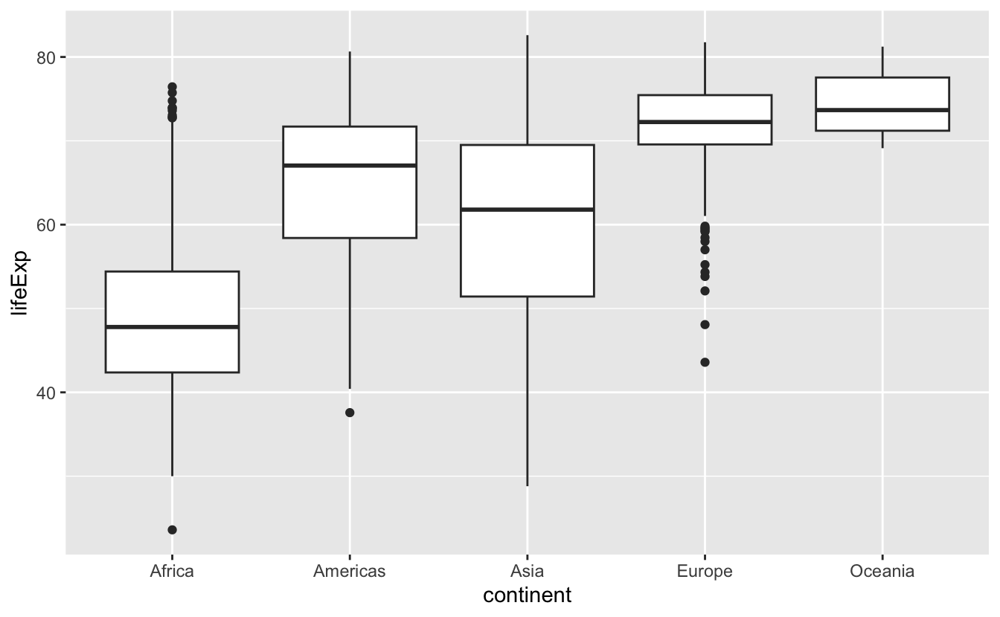

gapminder_2007 <- gapminder |>
filter(year == 2007)Explorative Datenanalyse durch Visualisierung & Digitaler Arbeitsplatz (DAP)
rstatsZH - Data Science mit R
Artwork by @allison_horst
Lösung von Coding Problemen
Tipps für Suchmaschinen
- Verwende Verben, die beschreiben, was du tun willst
- Sei präzise
- Füge R zur Suchanfrage hinzu
- Füge den Namen des R-Pakets zur Suchanfrage hinzu (z.B ggplot2)
- Scrolle durch die ersten 5 Ergebnisse (wähle nicht nur das erste aus)
- Schreibe die Suchanfrage auf Englisch
Beispiel: How to remove a legend from a plot in R ggplot2?
Stack Overflow
Was ist das?
- Das größte Unterstützungsnetzwerk für (Coding-)Probleme
- Kann anfangs einschüchternd sein
- Upvote-System
Arbeitsablauf
- Lies dir zuerst kurz die Frage durch, die gepostet wurde.
- Lies dir dann die Antwort durch, die als “richtig” markiert wurde.
- Lies dir dann eine oder zwei weitere Antworten mit vielen Zustimmungen durch.
- Sieh dir dann die “linked posts” an.
Tipps für AI Werkzeuge
- Verwende Verben, die beschreiben, was du tun willst
- Präzise sein ist weniger wichtig
- Füge R zur Suchanfrage hinzu
- Füge den Namen des R-Pakets zur Suchanfrage hinzu (z.B ggplot2)
- Schreibe die Suchanfrage auf Englisch oder Deutsch
Wie entferne ich eine Legende aus einem Diagramm in R ggplot2?
Legende in R ggplot2 entfernen.
Andere Quellen für Hilfe
- Posit Community Forum: https://community.rstudio.com/
- Dokumentation Webseiten: https://ggplot2.tidyverse.org/
- Mastodon tag: #rstats

Lernziele (für diese Woche)
lernziele <- readr::read_csv(here::here("data/tbl-01-rstatszh-k009-lernziele.csv")) |>
dplyr::filter(modul == params$modul) |>
dplyr::pull(lernziele)Rows: 34 Columns: 4
── Column specification ────────────────────────────────────────────────────────
Delimiter: ","
chr (2): titel, lernziele
dbl (1): modul
dttm (1): datum
ℹ Use `spec()` to retrieve the full column specification for this data.
ℹ Specify the column types or set `show_col_types = FALSE` to quiet this message.- Die Lernenden können beschreiben wie Variablen eines Datensatzes mittels des R-Package ggplot2 den visuellen Eigenschaften eines Diagramms zugeordnet werden (EN: aesthetic mapping).
- Die Lernenden können die Skalierungen (Farbe, Achsen) eines Diagramms kontrollieren.
- Die Lernenden können drei verschiedene Diagrammtypen (Balkendiagramm, Histogramm, Punkt) und ihre Anwendungsfälle vergleichen.
- Die Lernenden können den DAP navigieren um relevante Software selbst auf ihren Arbeitsgeräten zu installieren. Sie können sich das R-Bundle aus dem Serviceportal bestellen und wissen wie sie Probleme melden.
Digitaler Arbeitsplatz / R Community
Triff das STAT
Philipp Bosch
- Job ohne Excel gesucht 🧮
- Community Mensch 💙
- Data Literacy Fan 💡
Thomas Knecht
- R-Support gegen Cookies 🍪
- R-Infrastruktur Guru 🧙
- Debug-Master & Kartentyp 🗺️
Installation auf dem DAP
Um in den vollen Genuss der R-Analyse Umgebung zu kommen, musst du im Serviceportal folgende Module bestellen:



Community
Im Kanton haben wir eine Community of Practice für R, welche ihre digitale Heimat in einem Teams-Kanal hat.
Im Kanal könnt ihr:
- Fragen rund um R stellen (Stackoverflow des Kantons)
- Neue Infos zum R-Bundle erhalten
- Up-to-date bleiben was in der Community läuft
R-Fachgruppe
Aufgaben
- Updates des R-Bundles
- Weiterentwicklung der Installation anhand eurer Bedürfnisse
- Support bei Installationsproblemen
Vertretungen
Thomas Knecht (JI)
Philipp Bosch (JI)
Sarah Gerhard (BI)
Miriam Hofstetter (VD)
Andreas Gubler (BD)
Gianluca Macauda (GD)
Fabian Berger (SD)
Jörg Sintermann (BD)
Nina Schnyder (JI)
Gian-Marco Alt (BD)
Joëlle Ninon Albrecht (JI)
Ihr seid dran: Fragen
Stellt eure Fragen an Thomas und Philipp
Pause machen
Bitte steh auf und beweg dich. Lasst eure E-Mails in Frieden ruhen.

countdown(minutes = 10)10:00
Explorative Datenanalyse mit ggplot2
R Paket ggplot2
- ggplot2 ist das Datenvisualisierungspaket von tidyverse
- gg” in “ggplot2” steht für “Grammar of Graphics”
- Inspiriert durch das Buch Grammar of Graphics von Leland Wilkinson
- Dokumentation: https://ggplot2.tidyverse.org/
- Buch: https://ggplot2-book.org

#knitr::include_graphics(here::here("slides/img/md-02/ggplot2-part-of-tidyverse.png"))Ich bin dran: Arbeiten mit Quarto und R
Zurücklehnen und genießen!
Code Struktur
ggplot()ist die Hauptfunktion von ggplot2- Plots werden in Schichten aufgebaut
- Die Struktur des Codes für Plots lässt sich wie folgt zusammenfassen
ggplot(data = [datensatz],
mapping = aes(x = [x-variable],
y = [y-variable])) +
geom_xxx() +
andere Optionen Code Struktur
ggplot()
Code Struktur
ggplot(data = gapminder)
Code Struktur
ggplot(data = gapminder,
mapping = aes()) 
Code Struktur
ggplot(data = gapminder,
mapping = aes(x = continent,
y = lifeExp)) 
Code Struktur
ggplot(data = gapminder,
mapping = aes(x = continent,
y = lifeExp)) +
geom_boxplot() 
Code Struktur
ggplot(data = gapminder,
mapping = aes(x = continent,
y = lifeExp)) +
geom_boxplot() +
theme_minimal()
Polls
Poll 1: Was stellt die dicke Linie innerhalb des Kastens eines Boxplots dar?
- Ich weiß es nicht
- der Mittelwert der Beobachtungen
- die Mitte der Box
- der Median der Beobachtungen
ggplot(data = gapminder,
mapping = aes(x = continent,
y = lifeExp)) +
geom_boxplot() +
theme_minimal(base_size = 14)
Poll 2: Wie viel Prozent der Beobachtungen befinden sich innerhalb der Box eines Boxplots (Interquartilsbereich)?
- Ich weiß es nicht
- 25%
- hängt vom Median ab
- 50%
ggplot(data = gapminder,
mapping = aes(x = continent,
y = lifeExp)) +
geom_boxplot() +
theme_minimal(base_size = 14)
Poll 3: Was ist der Median einer Gruppe von Beobachtungen?
- Ich weiß es nicht
- Der Median ist der am häufigsten vorkommende Wert in einem Datensatz.
- Der Median ist die Summe aller Werte in einem Datensatz geteilt durch die Anzahl der Beobachtungen.
- Der Median ist der Punkt, über und unter dem die Hälfte (50%) der Beobachtungen liegt.
Boxplot, erklärt

Die Box ist ein Feld, das den Bereich der mittleren Hälfte der Daten angibt, eine Distanz, die als Interquartilbereich (IQR) bekannt ist und sich vom 25. Perzentil der Verteilung bis zum 75. Perzentil erstreckt.
In der Mitte der Box befindet sich eine Linie, die den Median, d. h. das 50. Perzentil, der Verteilung anzeigt.
Diese drei Linien vermitteln einen Eindruck von der Streuung der Verteilung und davon, ob die Verteilung symmetrisch um den Median oder zu einer Seite hin verzerrt ist.
Visuelle Punkte, die Beobachtungen anzeigen, die mehr als das 1,5-Fache des IQR von einem der Ränder des Kastens entfernt liegen. Diese Ausreißer sind ungewöhnlich und werden daher einzeln dargestellt.
Eine Linie (oder ein Whisker), die sich von jedem Ende des Kastens bis zum am weitesten entfernten Punkt in der Verteilung erstreckt, der kein Ausreißer ist.
Wir sind dran: md-02-uebungen
- Öffne posit.cloud in deinem Browser (verwende dein Lesezeichen).
- Öffne den rstatszh-k009 Arbeitsbereich (Workspace) für den Kurs.
- Klicke auf Start neben md-02-uebungen.
- Suche im Dateimanager im Fenster unten rechts die Datei md-02b-daten-visualisierung.qmd und klicke darauf, um sie im Fenster oben links zu öffnen.
countdown(20)20:00
Pause machen
Bitte steh auf und beweg dich. Lasst eure E-Mails in Frieden ruhen.
countdown(minutes = 5)05:00
Daten visualisieren
Variablen Typen
Numerisch
Diskrete Variablen
- nicht negative
- zählbare
- ganze Zahlen
- z.B. Anzahl Schüler, Würfelwurf
Stetige (kontinuierliche) Variablen
- unendliche Anzahl von Werten
- zwischen zwei Werten
- auch Datums/Uhrzeitwerte
- z.B. Länge, Gewicht, Grösse
Nicht numerisch
Kategoriale Variablen
- endliche Anzahl von Werten
- eindeutige Gruppen (z.B. EU Länder)
- ordinal, wenn diese eine logische Reihenfolge/Rangordnung aufweisen (z.B. Wochentage)
Histogramm
- zur Visualisierung der Verteilung von kontinuierlichen (numerischen) Variablen

Barplot (Säulendiagramm)
- zur Visualisierung der Verteilung von kategorischen (nicht numerischen) Variablen

Scatterplot (Streudiagramm)
- for visualizing relationships between two continuous (numerical) variables

Zusatzaufgaben Modul 2
Modul 2 Dokumentation
Zusatzaufgaben Abgabedatum
- Abgabedatum: Montag, 07. Oktober
- Korrektur- und Feedbackphase bis zu: Donnerstag, 10. Oktober
Danke
Danke! 🌻
Folien erstellt mit revealjs und Quarto: https://quarto.org/docs/presentations/revealjs/ Access slides als PDF auf GitHub
Alle Materialien sind lizenziert unter Creative Commons Attribution Share Alike 4.0 International.